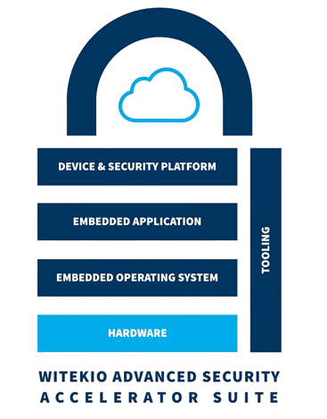
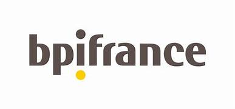
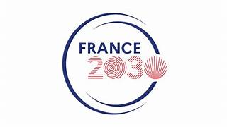

Witekio Advanced Security Accelerator Suite - WASAS
Informations du projet
Nom du projet : Witekio Advanced Security Accelerator Suite (WASAS)
Durée : De 01/01/2022 à 30/06/2026
Coût total du projet : 3 248 980 €

Schéma WASASArchitecture WASAS
Contexte
L’objectif du projet WASAS est de développer une solution accessible et clé en main pour le
développement, la mise en œuvre et la gestion de solutions IoT sécurisées. Cette solution permettra
aux PMEs et ETIs un accès facilité aux technologies de l’IoT et de la cybersécurité, du hardware
jusqu’à la plateforme cloud, afin de dynamiser la création de nouvelles solutions connectées et
sécurisées.
Articles publiés
Resilient and Adaptive Routing in Enterprise IoT: The RRP Protocol
Cet article présente le protocole RRP (Resilient Enterprise Routing Protocol), conçu pour les réseaux d’entreprise
afin d’assurer des communications fiables en cas de panne de nœuds ou de serveurs. L’IoT, en intégrant une couche d’intelligence
dans les environnements d’entreprise, offre des avantages tels que la surveillance en temps réel, l’automatisation des processus et
l’optimisation des ressources. Cependant, des défis persistent, notamment la gestion de l’énergie, la QoS, la transmission de données
fiable et la résilience aux pannes. RRP, basé sur un mécanisme de reroutage dynamique, garantit une QoS optimale.
Les simulations menées avec OMNeT++ montrent que RRP améliore significativement la résilience et la réactivité des infrastructures IoT
en milieu professionnel.
A Modular Framework for Anomaly Detection in IoT Networks with Explainability
Cet article présente un cadre modulaire pour la détection d'anomalies dans les environnements IoT, conçu pour répondre aux défis posés par l'augmentation massive des appareils connectés. L'expansion rapide de l'Internet des objets (IoT) a considérablement élargi la surface d'attaque des réseaux modernes, rendant indispensable la mise en place de mécanismes de détection robustes et efficaces.
Bien que les systèmes de détection d'intrusion (IDS) basés sur l'apprentissage automatique aient été largement étudiés, la plupart reposent sur des pipelines rigides et monolithiques, limitant leur réutilisation, leur reproductibilité et leur adaptation à des ensembles de données hétérogènes. Pour surmonter ces limites, le cadre proposé intègre l'automatisation, la configurabilité et l'explicabilité au sein d’un pipeline unifié.
Chaque étape du flux de travail — analyse exploratoire des données, prétraitement, sélection des caractéristiques, équilibrage des classes, entraînement du modèle, évaluation et explicabilité via SHAP — est encapsulée dans des modules indépendants, contrôlés par un bloc de configuration central. Cette approche permet la génération automatique de modèles de détection et une adaptation flexible sans modification du code.
Les expérimentations menées sur l’ensemble de données CIC-IoT2023, dans des scénarios de classification fine, groupée et binaire, ont permis d’identifier une configuration optimale. Une validation croisée avec le jeu de données CIC-Bot-IoT a confirmé la robustesse et la généralisabilité du framework, démontrant son efficacité pour la détection d'anomalies dans des environnements IoT hétérogènes.
En outre, ce framework offre un environnement unifié pour la comparaison systématique des méthodes de détection d'anomalies, favorisant la reproductibilité, l'extensibilité et le déploiement pratique dans des systèmes IoT réels.
Towards a Uniform Description Language for the Social Integration of Smart Objects
Olfa DALLEL, Nadia Kabachi, Elhadj Benkhelifa
Cet article présente l'introduction d'un langage de description uniforme pour les objets IoT sociaux (UDL-SIoT), conçu pour faciliter l'intégration des appareils IoT aux plateformes de l'Internet social des objets (SIoT).
Dans les systèmes IoT classiques, des langages tels que le langage de description uniforme (UDL) sont utilisés pour décrire formellement les caractéristiques et fonctionnalités des objets.
Cependant, avec l'intégration des concepts de réseaux sociaux dans l'IoT et l'émergence du SIoT, il devient nécessaire de spécifier comment les objets peuvent interagir socialement.
Actuellement, la définition du profil social initial d'un objet se limite souvent à la spécification de relations sociales via des règles prédéfinies, ce qui restreint l'automatisation et l'évolutivité.
Pour surmonter cette limite, l’UDL-SIoT propose une méthode structurée permettant de définir les caractéristiques des appareils IoT — fonctionnelles, techniques, sociales, de qualité de service et de sécurité — et de les exploiter pour créer leurs profils sociaux.
De plus, un générateur de profils sociaux basé sur le Deep Learning (DL) est proposé afin d’automatiser la création des profils. Ce générateur attribue un profil social aux objets rejoignant le réseau pour la première fois et prédit leurs connexions sociales potentielles.
L’évaluation, réalisée sur un jeu de données SIoT réel, démontre une précision de 92 % dans la prédiction des relations sociales. Ces relations prédites peuvent être utilisées pour automatiser la spécification des règles de socialisation, permettant ainsi aux objets IoT d'établir des relations sociales de manière autonome.
Sponsors

Bpifrance
Bpifrance est une banque publique d'investissement française, ayant pour mission le financement et le développement des entreprises.
Elle est née à la fin de l'année 2012 du regroupement d'Oséo, de CDC Entreprises, du Fonds stratégique d'investissement (FSI) et du FSI Régions.
Elle est en particulier chargée de soutenir les petites et moyennes entreprises, les entreprises de taille intermédiaire et les entreprises innovantes en appui des politiques publiques de l'État et des régions.
Son siège est situé à Maisons-Alfort, dans le Val-de-Marne.

France2030
France 2030 mobilise 54 milliards d’euros pour accompagner la transformation de nos entreprises,
écoles, universités et organismes de recherche.
L’objectif est de les aider à relever les défis écologiques et économiques à venir, tout en faisant
émerger les futurs champions des filières d’excellence.
Le plan prévoit que 50 % des dépenses soient consacrées à la décarbonation de l’économie,
et 50 % à soutenir les acteurs innovants, en évitant tout financement nuisible à l’environnement.
Contact
Pour plus d'informations, veuillez contacter : mail@example.com